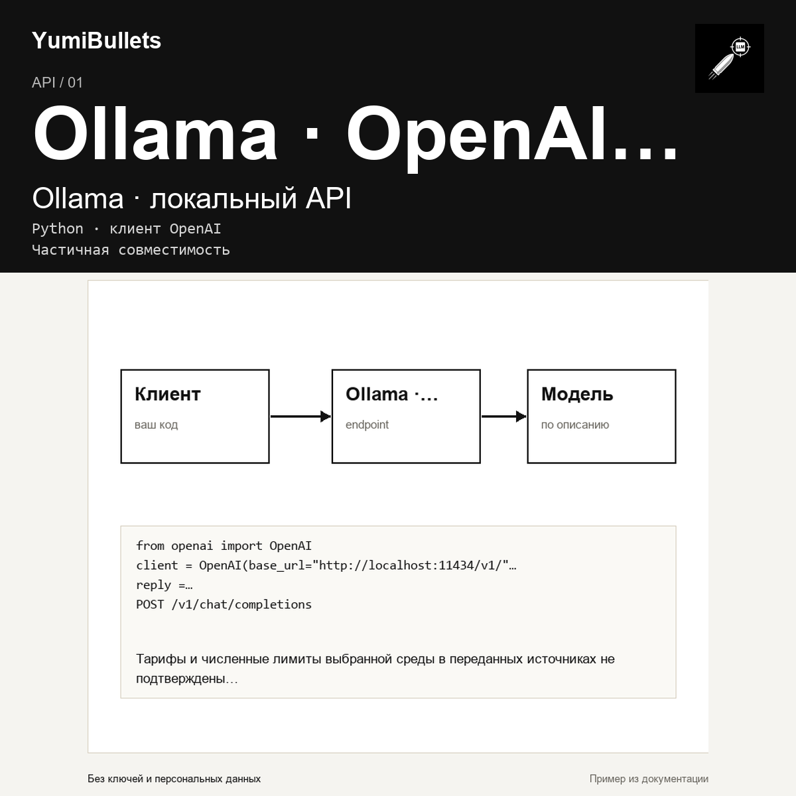

Ollama и OpenAI API: локальный вызов через Python
У вас уже есть Python-код с клиентом OpenAI, а модель хочется вызывать на своей машине. Ollama позволяет сохранить привычный интерфейс клиента и заменить адрес сервера. Разберём официальный локальный пример — без утверждения, что этот запрос уже выполнен в нашей среде.